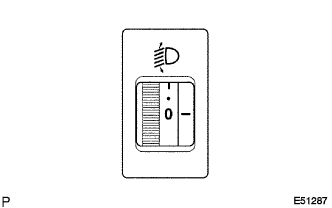
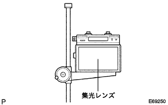
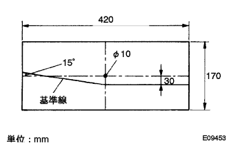
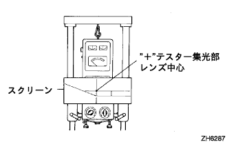

ヘッドランプASSY 調整 |
| 1. ヘッドランプ調整前作業 |
タイヤ空気圧を正確に調整する。
運転席に1名乗車する。
エンジンを始動し、バッテリを充電状態にする。
|  |
レベリングスイッチのダイヤルを0にする。(ディスチャージヘッドランプあり)
| 2. ヘッドランプ光軸調整(ロービーム テスター使用時) |
テスターとヘッドランプレンズの距離をテスターの規定値にする。
車両にテスターを正対させる。
ヘッドランプテスターをセットする。
テスターの角度調整つまみを下方10ｃｍ、左右0ｃｍにする。
|  |
ヘッドランプの中心にテスターの集光レンズを合わせる。
他方のランプの光の影響を受けない処置をする。
ヘッドランプをロービームで点灯する。
使用するヘッドランプテスターの取り扱い要領に基づき、ロービームの光軸を調整する。
| 3. ヘッドランプ光度点検(ロービームテスター使用時) |
光軸調整後ヘッドランプテスターで光度を点検する。
| 4. ヘッドランプ光軸調整(ロービーム スクリーン使用時) |
厚手の白紙を用意する。
|  |
図の調整用スクリーンを作成する。
|  |
テスターとヘッドランプレンズの距離を3ｍにする。
車両にテスターを正対させる。
ヘッドランプテスターをセットする。
ヘッドランプ中心にテスターの集光レンズ中心を合わせる。
テスターの集光レンズ中心に調整用スクリーンの中心穴を合わせテープなどで貼り付ける。
他方のランプの光の影響を受けない処置をする。
ヘッドランプをロービームで点灯する。
基準線から大きくはずれる場合は、明暗分割線を基準位値の位置にロービームの光軸を調整する。
| 5. ヘッドランプ光度点検(ロービーム·ハイビームテスター使用時) |
テスターとヘッドランプレンズの距離をテスターの規定値にする。
車両にテスターを正対させる。
ヘッドランプテスターをセットする。
テスターの角度調整つまみを下方11ｃｍ、左方23ｃｍにする。
ヘッドランプの中心にテスターの集光レンズを合わせる。
他方のランプの光の影響を受けない処置をする。
ヘッドランプをロービームで点灯する。
光軸調整後、ヘッドランプテスターをこの様にセットした状態で光度を点検する。
| 6. ヘッドランプ光軸調整(ハイビーム テスター使用時) |
テスターとヘッドランプレンズの距離をテスターの規定値にする。
車両にテスターを正対させる。
ヘッドランプテスターをセットする。
テスターの角度調整つまみを下方ヘッドランプ中心の高さ1/5ｃｍ、左右とも0ｃｍにする。(左側ヘッドランプ)
テスターの角度調整つまみを下方ヘッドランプ中心の高さ1/5ｃｍ、左方5ｃｍにする。(右側ヘッドランプ)
ヘッドランプ中心にテスターの集光レンズを合わせる。
他方のランプの光の影響を受けない処置をする。
ヘッドランプをハイビームで点灯する。
使用するヘッドランプテスターの取り扱い要領に基づき、ハイビームの光軸を調整する。
| 7. ヘッドランプ光度点検(ハイビームテスター使用時) |
光軸調整後ヘッドランプテスターで光度を点検する。